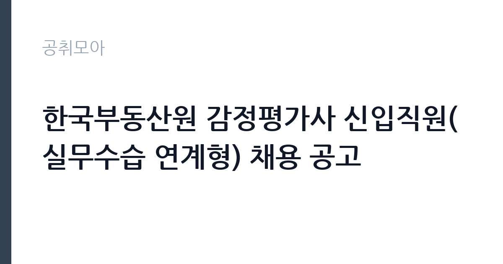

[공공기관] 한국부동산원 감정평가사 신입직원(실무수습 연계형) 채용 공고
한국부동산원 · 서울 · 마감 2026-11-05 (D-15) · 출처 잡알리오

한눈에 보는 모집 조건
| 기관 | 한국부동산원 |
|---|---|
| 공고명 | 한국부동산원 감정평가사 신입직원(실무수습 연계형) 채용 공고 |
| 고용형태 | 정규직 |
| 근무지 | 서울 |
| 게시일 | 2026-10-21 |
| 마감일 | 2026-11-05 (D-15) |
지원자격, 이렇게 읽으세요
- 공공기관 채용공시
- 세부 조건은 원문 공고문 확인
정규직 채용은 기간의 정함이 없는 근로계약을 전제로 합니다. 수습 기간을 두고 평가한 뒤 정규직으로 확정하는 절차가 일반적이며 기관의 인사 규정과 임금 체계를 적용받습니다. 이번 공고는 한국부동산원에서 직접 진행하는 자체 전형으로, 응시자격과 제출서류는 공고문에 항목별로 제시됩니다. 감정평가 직무는 감정평가사 자격이 필수입니다. 자격 취득 후 실무수습 과정을 거치는 채용인지, 경력자 채용인지 구분해야 합니다. 실무수습 연계형은 수습 기간과 정규직 전환 조건이 명시됩니다. 관련 법령 지식과 보고서 작성 능력이 평가 대상입니다. 채용 후에는 이해충돌 방지와 겸직 제한 규정이 적용됩니다. 서류는 접수 마감 이후 보완이 되지 않으므로 자격 요건과 증빙 서류를 마감 전에 모두 갖춰야 합니다. 공고문에 명시된 우대 사항은 해당 여부를 확인해 증빙을 첨부해야 가점이 반영됩니다. 공고문의 응시자격 표를 보면 자격 항목이 여러 줄로 나뉘어 있으므로, 각 줄을 하나씩 체크하며 본인 해당 여부를 표시해 두면 누락을 줄일 수 있습니다.
이 공고의 포인트
이 공고의 첫 번째 포인트는 고용 형태입니다. 수습 기간 평가를 통과하면 기간의 정함이 없는 신분이 되어 고용이 안정됩니다. 두 번째는 업무 범위가 명확하다는 점입니다. 감정평가 직무로 채용되므로 배치 이후 담당 업무가 크게 흔들리지 않습니다. 세 번째는 근무지입니다. 서울 지역 근무로 접근성은 좋지만 그만큼 지원자가 몰리는 지역이므로 경쟁률을 넉넉히 잡아야 합니다. 직무 특성이 분명해 본인의 경험과 맞는지 빠르게 판단할 수 있습니다. 선발 인원은 공고문에 명시되어 있으니 모집분야 항목을 함께 확인하십시오.
전형은 어떻게 진행되나
1차 서류, 2차 면접의 2단계로 진행되는 구성이 일반적입니다. 서류에서는 자격 요건과 경력 증빙을 확인하고, 면접에서는 실제 업무 수행 능력과 조직 적응을 봅니다. 직무에 따라 필기시험이나 실기, 컴퓨터 활용 시험이 추가되기도 하므로 공고문의 전형표를 먼저 확인하십시오. 단계별로 합격자만 다음 전형에 응시할 수 있고, 단계마다 응시 자격 확인 서류를 다시 제출해야 하는 경우가 있습니다. 최종합격자 발표 후에는 신원조회와 채용 신체검사가 남아 있습니다. 경력 증명서에 직무 내용이 적혀 있지 않으면 인정받지 못할 수 있으므로 상세 기재를 요청하십시오.
원문에서 확인한 전형 방식
ㅇ 「감정평가 및 감정평가사에 관한 법률」 제11조에 따른 감정평가사 자격이 있는 자로서, 공고 마감일(’26.11.5) 기준 같은 법 시행규칙 제11조 제1항에 따른 감정평가사 실무수습을 신청하고 수료하지 않은 자 ㅇ 입사 예정일로부터 근무할 수 있는 사람 ㅇ 우리 원 「인사규정」상 채용 결격사유가 없는 사람(별첨 참조) ㅇ 우리 원 「취업규칙」에 따라 정년인 만 60세 미만인 사람 ㅇ 남자의 경우 군필* 또는 면제인 사람 *최종합격자 발표일(’26.12.24.) 이전 전역 예정자 포함
이런 분께 추천해요
- 감정평가사 자격을 보유한 분
- 보고서 작성과 근거 정리에 강점이 있는 분
- 공공 보상·자산 관리 업무에 관심이 있는 분
지원 전 체크리스트
- 응시자격 요건과 경력 기준을 충족하는가 — 경력은 증명서로 입증해야 합니다
- 수습 기간과 정규직 전환 조건을 확인했는가
- 제출서류 목록을 모두 준비했는가 — 누락 시 서류 단계에서 탈락합니다
- 접수 마감 2026-11-05 이전에 접수 방식을 확인해 제출했는가
모집 일정과 제출 타이밍
2026-10-21에 공고가 올라왔고 접수는 2026-11-05까지입니다. 남은 기간은 15일이며, 이 기간에 자격증 사본과 경력증명서, 주민등록등본 같은 기본 서류를 모두 준비해야 합니다. 경력증명서는 발급에 며칠이 걸리는 경우가 있으니 가장 먼저 신청하십시오. 접수는 온라인과 우편·방문으로 나뉘는 경우가 많고, 우편 접수는 도착 기준으로 판정되므로 마감일 소인만 믿으면 안 됩니다. 면접 일정은 서류 발표 후 개별 통보되므로 제출 후에도 연락을 받을 수 있도록 유지해야 합니다. 마감 이후에는 어떤 사유로도 접수가 인정되지 않으므로 하루 전 제출을 목표로 하십시오. 서울 근무지는 대중교통 접근성이 좋은 대신 주차와 통근 시간이 변수입니다. 출퇴근 경로를 미리 확인하십시오. 마감까지 여유가 있어 자격 요건을 천천히 확인하고 준비할 수 있습니다. 선발 인원은 공고문의 모집분야 항목에 직종별로 제시되어 있습니다.
직무 이해하기: 공공기관
공공기관은 도로와 수자원, 농지, 부동산 시장 관리 같은 공적 기능을 수행합니다. 현장 사업소는 도로와 시설 유지 관리, 조경과 환경 관리 업무를 직접 수행하며 계절 사업에 따라 기간제 인력을 채용합니다. 감정평가 업무는 토지와 건물의 가치를 산정하고 근거를 정리하는 일입니다. 현장 조사로 위치와 이용 상황을 확인하고, 거래 사례와 공시지가를 비교해 가액을 산출합니다. 평가 결과를 보고서로 작성하고 검토 절차를 거칩니다. 공공기관에서는 보상이나 자산 관리 목적의 평가가 많아 관련 법령과 기준을 정확히 적용해야 합니다. 실무수습 형태라면 선임 평가사의 지도 아래 단계적으로 업무를 익힙니다. 업무는 혼자 처리하기보다 부서 단위로 나눠 진행되므로 담당 구역과 협업 범위를 입사 초에 확인하는 것이 중요합니다. 업무 매뉴얼과 지침이 문서로 정리되어 있어 절차를 익히면 반복 업무는 빠르게 손에 붙습니다.
자기소개서 작성 팁
감정평가 지원서는 자격과 실무 경험을 중심으로 구성하십시오. 수행한 평가 유형과 대상, 사용한 방법론을 구체적으로 쓰고 보고서 작성 경험을 함께 밝히십시오. 공공기관 업무와 연결되는 보상·자산 관리 경험이 있다면 강조하십시오. 윤리 의식과 이해충돌 관리에 대한 문단을 넣으면 신뢰를 줍니다. 구성은 지원 동기, 직무 경험, 기여 방안 순서가 무난합니다. 지원 동기는 한국부동산원의 사업 중 본인이 관심을 가진 부분을 한 가지로 좁혀 서술하고 추상적인 표현은 줄이십시오. 직무 경험은 담당했던 업무와 규모, 결과를 수치로 제시하면 설득력이 올라갑니다. 기여 방안은 입사 후 첫 3개월과 1년 계획으로 나눠 쓰면 준비도가 드러납니다.
면접 준비 포인트
면접에서는 평가 방법론과 법령 적용 능력을 확인합니다. 유사한 사례에서 어떤 방식으로 가액을 산정했는지, 이해관계가 얽힌 평가를 어떻게 처리할지 묻습니다. 공공 보상 업무의 특성상 절차 준수와 근거 제시가 중요합니다. 실무수습 지원자라면 학습 계획을 구체적으로 답하십시오. 답변은 상황, 판단, 조치의 순서로 정리하면 전달이 분명해집니다. 모르는 질문에는 모른다고 밝히고 확인 방법을 제시하는 편이 억지 답변보다 낫습니다. 마지막에는 근무 의사와 함께 2026-11-05 이후 일정에 언제든 응할 수 있다는 점을 전달하십시오. 면접은 공고문에 적힌 직무 내용을 얼마나 이해하고 있는지 확인하는 질문으로 시작하는 경우가 많으니, 모집분야 문구를 그대로 읽어 두는 것이 도움이 됩니다.
급여·근무조건 읽는 법
감정평가 직무의 보수는 채용 형태에 따라 다릅니다. 정규직 신입은 기관 임금체계와 수습 기간 조건을 적용받고, 계약직은 연봉 총액이 개별로 정해집니다. 실무수습 연계형은 수습 기간의 보수와 전환 후 보수가 다를 수 있으므로 공고문에서 두 단계를 나눠 확인해야 합니다. 2026년 최저임금은 시급 10,320원, 월 환산 2,156,880원입니다. 2026년 적용 최저임금은 시급 10,320원, 월 환산 2,156,880원(주 40시간·209시간 기준)입니다. 고용노동부 고시 제2025-47호로 확정된 금액입니다. 실수령액을 계산하려면 세금과 4대 보험료를 빼야 합니다. 공고문에는 세전 금액만 제시되는 경우가 많으므로, 월 급여에서 약 9% 안팎의 공제가 발생한다고 보고 대략적인 수령액을 가늠하십시오. 부양가족 수와 비과세 항목에 따라 차이가 나므로 정확한 금액은 급여 담당 부서에 문의하는 것이 가장 확실합니다. 수당 항목과 지급 주기도 함께 확인하십시오.
자주 묻는 질문
- 선발 인원은 몇 명인가요?
공고문의 모집분야 항목에 직종별 인원이 표로 제시되어 있습니다. 첨부된 공고문 원문에서 확인하십시오. - 근무지는 어디인가요?
서울 지역의 한국부동산원 소속 근무지입니다. 세부 주소와 출퇴근 조건은 원문 공고문에서 확인할 수 있습니다. - 보수는 얼마인가요?
채용 신분(정규직)과 기관 임금 규정에 따라 정해지며 구체적인 금액은 공고문 처우 항목에 제시됩니다. 금액이 공개되지 않은 경우에는 원문의 보수표를 확인하십시오.
함께 보면 좋은 공고
[공공기관] 2026년도 업무지원직(시설지원직) 신규직원 블라인드 공개채용 모집 공고 — 마감 2026-11-05[공공기관] 2026년 제1차 새울원자력본부 기간제근로자 채용 — 마감 2026-11-06[공공기관] 한국기술교육대학교 고용서비스인재교육추진단 연구원 채용 공고 — 마감 2026-11-08출처: 잡알리오 공개정보를 바탕으로 공취모아가 정리한 안내글입니다. 모집 조건·일정은 변경될 수 있으니 지원 전 반드시 원문 공고문을 확인하세요. 본 글은 정보 제공용이며 합격을 보장하지 않습니다.